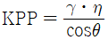
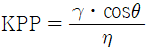
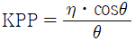
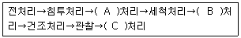

침투비파괴검사기사 (2016-05-08 기출문제)
1과목: 비파괴검사 개론
1. 동일 조건에서 모세관의 반지름이 2배로 늘어나면 모세관 속 액체의 높이는 어떻게 되는가?
- 1/4로 낮아진다.
- 1/2로 낮아진다.
- 2배로 높아진다.
- 4배로 높아진다.
(정답률: 81%)

2. 방사선투과시험과 비교하여 초음파탐상시험의 장점을 설명한 것으로 옳은 것은?
- 한 면만으로도 탐상이 가능하다.
- 시험체의 표면이 거친 경우에 유리하다.
- 탐상을 위한 접촉매질이 필요하지 않다.
- 탐상의 기준이 되는 표준시험편이나 대비시험편이 필요하지 않다.
(정답률: 72%)
3. 다음 중 와전류탐상검사의 장점이 아닌 것은?
- 표면 아래 깊은 곳에 위치한 결함의 검출에 용이하다.
- 시험 속도가 크고, 자동화가 가능하다.
- 결함 크기, 재질 변화 등을 동시에 검사하는 것이 가능하다.
- 관, 선, 환봉 등에 대해 비접촉으로 검사가 가능하다.
(정답률: 60%)
4. 다음 중 비파괴검사법과 원리의 연결이 틀린 것은?
- 방사선투과시험-결함에 의한 투과강도의 차이
- 초음파탐상시험-결함에 의한 반사 에코
- 자분탐상시험-결함에 의한 누설 자속
- 침투탐상시험-결함에 의한 표피효과
(정답률: 72%)
5. 시험체 내부를 통과하는 방사선의 투과량이 다른 것을 이용하여 시험체 내부 불균일을 검사할 때 사용하는 것은?
- α선
- β선
- 자외선
- 중성자선
(정답률: 63%)
6. 스프링강에서 담금질성을 높이고 탄성한도를 향상시키는 원소는?
- S
- W
- Mo
- Si
(정답률: 47%)
7. 니켈-크롬강에 담금질성을 향상시켜 200mm까지도 담금질이 가능하게 하여 사용하는 기계 구조용 저합금강을 만들기 위해 첨가하는 원소로서, 이 원소를 첨가하면 뜨임연화저항이 크므로 높은 온도까지 뜨임할 수 있다. 다른 합금강에 비하여 최고의 강인성을 나타내기 위해 첨가하는 원소는?
- B
- Mn
- Cu
- Mo
(정답률: 43%)
8. 로우 엑스(Lo-Ex)합금에 대하여 설명한 것 중 틀린 것은?
- 고온강도가 크다.
- 내마모성이 좋다.
- 피스톤 재료로 사용한다.
- 주로 단조 가공하여 사용한다.
(정답률: 57%)
9. 산소나 탈산제를 품지 않는 구리로 전도성이 좋고, 수소취성이 없으며, 가공성도 우수하여 주로 전자기기 등에 사용되는 시판동은?
- 탈산동
- 정련동
- 전기동
- 무산소동
(정답률: 65%)
10. 피로한도에 대한 설명으로 옳은 것은?
- 지름이 크면 피로한도는 커진다.
- 노치가 있는 시험편의 피로한도는 크다.
- 표면이 거친 것이 고운 것보다 피로한도가 작다.
- 시험편이 산, 알칼리, 물에서는 부식되어 피로한도가 커진다.
(정답률: 64%)
11. 구리의 성질에 대한 설명 중 틀린 것은?
- 전연성이 좋아 가공이 용이하다.
- 전기 및 열의 전도성이 우수하다.
- 화학적 저항력이 작아서 부식이 심하다.
- Zn, Sn, Ni 등과 용이하게 합금을 만든다.
(정답률: 80%)
12. 금속침투법에서 세라다이징(sheradizing)법은 어떤 금속을 침투시키는 방법인가?
- B
- Zn
- Al
- Cr
(정답률: 41%)
13. Y 합금에 대한 설명 중 틀린 것은?
- 표준 조성은 Al-4%Cu-2%Ni-1.5Mg이다.
- 내열성 알루미늄합금으로 실린더 헤드로 사용된다.
- 인공시효는 230~240℃에서 5~8hr정도 가열한다.
- 적정 온도보다 지나치게 높은 온도에서 시효처리 하면 과시효가 발생하여 강도를 높인다.
(정답률: 55%)
14. 스테인리스강의 공식(孔蝕)을 방지하기 위한 대책으로 옳은 것은?
- 공기와의 접촉을 많게 하여 부식이 발생하게 된다.
- 할로겐 이온의 고농도의 것을 사용한다.
- 산소농담전지를 형성하여 부식생성물을 만든다.
- 재료 중의 C를 적게 하거나 Ni, Cr, Mo등의 성분을 많게 한다.
(정답률: 79%)
15. 바이트 재료로 사용되는 소결합금은?
- 저탄소강
- 탄소공구강
- 세라믹 공구
- 기계구조용강
(정답률: 37%)
16. 피복 아크 용접에서 직류정극성의 특징으로 틀린 것은?
- 비드 폭이 좁다.
- 모재의 용입이 깊다.
- 박판, 주철, 합금강, 비철금속의 용접에만 쓰인다.
- 열 분배는 용접봉에 30%, 모재에 70% 정도이다.
(정답률: 54%)
17. 정격 2차 전류가 300A인 용접기에서 200A로 용접할 경우 허용 사용율은? (단, 정격 사용율은 60%이다.)
- 115%
- 135%
- 140%
- 145%
(정답률: 70%)
18. 용접 홈 설계 시 고려해야할 사항으로 틀린 것은?
- 홈의 단면적은 가능한 한 크게 한다.
- 루트 반지름은 가능한 한 크게 한다.
- 루트간격의 최대치는 사용 용접봉의 지름 이하로 한다.
- 적당한 루트 간격과 루트면을 만들어 준다.
(정답률: 46%)
19. 서브머지드 아크 용접에서 기공의 발생을 방지하는 대책으로 틀린 것은?
- 정극성으로 연결한다.
- 용접속도를 저하시킨다.
- 이음부에 녹, 스케일, 유기물 등이 없을 것
- 소결용 용제는 약 300℃로 1시간 정도 건조한다.
(정답률: 42%)
20. 서브머지드 아크 용접에서 와이어의 적당한 돌출길이는 와이어 지름의 몇 배 전후로 하는 것이 가장 적당한가?
- 2
- 4
- 6
- 8
(정답률: 33%)
2과목: 침투탐상검사 원리
21. 재료의 침투탐상시험 시 불연속을 막아 버릴 염려가 있는 금속의 녹, 스케일 등을 제거하는 전처리 방법으로 가장 효과적인 것은?
- 증기 세척
- 알칼리 세척
- 초음파 세척
- 청정제 세척
(정답률: 59%)
22. 점성의 변수에 영향을 받는 동적침투인자(KPP)를 나타내는 식으로 옳은 것은? (단, γ : 표면장력, θ : 접촉각, η : 점성을 나타낸다.)



- KPP : γㆍηㆍcosθ
(정답률: 62%)
23. 표면장력은 어떤 물질에서 일어나는 고유현상인가?
- 기체
- 액체
- 고체
- 진공
(정답률: 75%)
24. 다음 현상제 중 가장 감도가 좋은 것은?
- 건식
- 습식
- 속건식
- 플라스틱필름(Plastic Film)
(정답률: 58%)
25. 다음 중 수세성 침투액의 제거방법으로 가장 적당한 것은?
- 저압으로 물을 분사시켜 세척한다.
- 80℃이상의 물을 분사시켜 깨끗하게 세척한다.
- 거즈에 물을 묻혀 깨끗하게 닦아낸다.
- 수조에 담그어 깨끗하게 세척한다.
(정답률: 75%)
26. 유화제를 이용한 침투탐상시험에서 기름입자는 입자표면에 흡착된 유화제의 분자막에 의해 물속에 격리되어 기름입자끼리 응집할 수 없는 유탁액이 된다. 유탁액 상태에서 침투액의 유성입자를 분리 제거하기 위한 방법으로 올바른 것은?
- 다시 물을 첨가한다.
- 다시 기름을 첨가한다.
- 다시 계면활성제를 첨가한다.
- 다시 유화제를 첨가한다.
(정답률: 52%)
27. 표면이 거친 시험면에 적용할 수 있는 침투탐상시험방법으로 검출 농도가 높은 것은?
- 후유화성 형광침투액-건식 현상제를 사용하는 방법
- 용제 제거성 형광침투액-속건식 현상제를 사용하는 방법
- 수세성 형광침투액-건식 현상제를 사용하는 방법
- 후유화성 염색 침투액(기름베이스유화제)-속건식 현상제를 사용하는 방법
(정답률: 59%)
28. 적심의 난이도를 나타내는 하나의 기준 값으로 접촉각을 사용하는데 접촉각과 적심성의 관계를 바르게 설명한 것은?
- 접촉각이 90°일 때 적심성이 가장 좋다.
- 접촉각이 90°를 초과할 때 적심성이 가장 좋다.
- 접촉각이 90° 미만일 때 적심성이 가장 좋다.
- 접촉각과 적심성은 아무런 관계가 없다.
(정답률: 69%)
29. 침투제가 균열이나 틈과 같은 미세한 개구부로 침투 또는 흡출되는 액체의 성질은 무슨 현상에서 기인하는가?
- 모세관 현상
- 확장 현상
- 엔탈피 현상
- 응집 현상
(정답률: 81%)
30. 결함검출을 위해 전처리를 하는 이유로서 가장 적합한 설명은?
- 침투액의 침투를 용이하게 하여 결함검출효과를 증대하기 위해
- 침투액의 오염을 방지하기 위해
- 형광침투액의 세정처리를 용이하게 하기 위해
- 용제제거성 침투액의 세정처리를 쉽게 하기 위해
(정답률: 80%)
31. 사용 중인 기름베이스 유화제의 피로시험에 대한 점검실시 방법과 가장 거리가 먼 것은?
- 점성 시험
- 수세성 시험
- 수분함량 시험
- 형광휘도 시험
(정답률: 68%)
32. 형광침투탐상시험시 사용되는 자외선등(black light)은 신체의 어느 부위에 가장 영향을 주는가?
- 뇌
- 피부
- 혈액
- 뼈
(정답률: 82%)
33. 형광침투탐상검사에서 사용되는 자외선등에 포함된 필터의 역할은?
- 가시성 빛을 여과하여 빛의 강도를 최소화한다.
- 자외선 파장의 침투에 의한 인체의 피해를 방지한다.
- 빛의 파장 범위에서 오로지 녹색의 파장만을 허용한다.
- 어두운 곳에서 눈으로 쉽게 볼 수 있게 한다.
(정답률: 39%)
34. 형광 침투탐상검사시 세척단계에서 자외선 등을 설치하는 이유는?
- 세척이 적절한가를 확인하기 위해
- 건조 과정없이 검사를 하기 위해
- 결함으로부터의 침투제의 흡출 작용을 돕기 위해
- 침투제가 시험체에 적용되었는지 확인하기 위해
(정답률: 78%)
35. 침지법을 사용하는 수세성 형광 침투액의 관리 요령으로서 적절하지 못한 것은?
- 주기적으로 세척성시험 및 수분함량을 측정하여야 한다.
- 사용 중인 용액의 성능은 항상 사용 전 성능을 유지해야 한다.
- 밀폐되어 있는 공간에서 사용한다면 성능시험은 하지 않아도 된다.
- 감도시험은 대비시험편 등을 이요할 수 있다.
(정답률: 80%)
36. 후유화성 형광침투액으로 상온에서 알루미늄 또는 마그네슘 사형주물을 검사할 때 적당한 침투시간은?
- 20분
- 10분
- 5분
- 2분
(정답률: 68%)
37. 침투탐상에서 침투액체가 시험체 고체 표면을 자연적으로 넓혀 적시어 주기 위한 조건으로 올바른 것은?
- 시험체의 표면장력과 접촉각을 가능한 크게함
- 적심성과 접촉각을 가능한 작게함
- 고체/액체 계면장력과 침투액의 표면장력을 가능한 작게함
- 고체/액체 표면장력과 침투액의 표면장력을 가능한 크게함
(정답률: 55%)
38. 침투탐상시험에 사용하는 이상적인 침투제의 조건으로 틀린 것은?
- 매우 미세한 개구부에도 쉽게 침투되어야 한다.
- 증발이나 건조가 너무 빠르지 말아야 한다.
- 얕거나 벌어져 있는 개구부에서도 쉽게 세척되어야 한다.
- 얇은 도포막을 형성하여야 한다.
(정답률: 65%)
39. 침투탐상을 실시할 시험체의 표면이 아주 고온으로 가열이 되었을 경우 어떠한 현상이 나타나는가?
- 침투액의 점성이 낮아지게 된다.
- 침투액이 급속이 불연속에 침투한다.
- 침투액의 형광특성이 낮아진다.
- 침투액은 불연속의 검출성을 높여준다.
(정답률: 38%)
40. 침투액의 특징으로 올바른 것은?
- 낮은 인화점이 좋다.
- 낮은 휘발성이 좋다.
- 낮은 발화점이 좋다.
- 높은 점성이 좋다.
(정답률: 63%)
3과목: 침투탐상검사 시험
41. 규격으로 정해지지 않은 일반적인 경우 침투탐상검사 시 침투시간을 토대로 현상시간을 결정한다. 이 경우에 침투시간이 30분이라면 다음 중 적당한 현상시간은?
- 5분
- 15분
- 30분
- 60분
(정답률: 34%)
42. 자외선조사등(black light)을 사용 시 수은등이 충분히 가열될 때까지 최소 몇 분을 주어야 하는가?
- 2분
- 5분
- 10분
- 15분
(정답률: 74%)
43. 다량의 소형 시험체에 대하여 수세성 형광침투탐상검사를 수행할 때 적합한 현상방법은?
- 속건식 현상법
- 습식 현상법
- 건식 현상법
- 무현상법
(정답률: 57%)
44. 물로 세척처리를 하는 경우, 현상처리를 효과적으로 하기 위한 건조처리의 적용 시기를 설명한 것으로 옳은 것은?
- 습식 현상법에서는 세척처리 후에 한다.
- 건식 현상법에서는 현상처리 후에 한다.
- 무현상법에서는 건조처리를 하지 않는다.
- 속건식 현상법에서는 세척처리 후에 한다.
(정답률: 49%)
45. 침투탐상시험 시 넓고 얕은 불연속을 찾는 데 다음 중 가장 효과적인 침투액은?
- 수세성 형광침투액
- 용제제거성 염색침투액
- 수세성 염색침투액
- 후유화성 형광침투액
(정답률: 66%)
46. 침투탐상시험 결과 의사모양과 결함지시모양과의 구별이 되지 못할 경우, 후속조치 방법으로 가장 거리가 먼 것은?
- 검사를 처음부터 다시 시작한다.
- 다른 검사방법으로 확인한다.
- 상급 기술자의 지시를 받는다.
- 의사모양으로 기록하고 검사를 완료한다.
(정답률: 73%)
47. 오스테나이트강이나 티타늄을 검사할 경우, 탐상제 중의 염소와 불소 제한 값은?
- 1%미만
- 0.1%미만
- 0.01%미만
- 10%미만
(정답률: 58%)
48. 후유화성 형광침투탐상검사의 순서가 다음과 같을 때 ()안에 적합한 공정은?

- A : 유화, B : 현상, C : 후
- A : 현상, B : 후 C : 유화
- A : 후, B : 유화, C : 현상
- A : 현상, B : 유화, C : 후
(정답률: 78%)
49. 사용 중인 탐상제를 비교, 점검하기 위한 기준 탐상제의 설명으로 옳은 것은?
- 적용 규격에서 정하고 있는 침투용 탐상제
- 결함지시의 모양을 표준화하는 데 사용되는 침투용 탐상제
- 탐상제를 구입할 때 그 일부를 깨끗한 용기에 채취하여 보존하고 있는 침투용 탐상제
- 탐상 감도를 높이기 위하여 사용 중인 탐상제에 첨가하여 사용되는 침투용 탐상제
(정답률: 42%)
50. 침투 탐상 검사에서 재검사를 실시하는 원인이 아닌 것은?
- 검사원이 변경된 경우
- 검사공정이 잘못된 경우
- 의사지시인지 의심스러운 경우
- 결함 판정이 의심스러운 경우
(정답률: 80%)
51. 침투탐상검사에서 대비시험편을 사용하는 주목적은?
- 점성 측정
- 오염도 측정
- 수분함량 확인
- 탐상성능 확인
(정답률: 84%)
52. 유기성, 무기성 오염에 적용하며 트리클렌 등을 사용한 세척 방법은?
- 산세척
- 용제세척
- 증기세척
- 알칼리세척
(정답률: 49%)
53. 다음 중 침투탐상검사 후에 탐상결과의 하나인 침투지시 모양을 영구적으로 보관하는 데 효과적인 현상제는?
- 휘발성 용제 현상제
- 플라스틱 필름 현상제
- 분말 현상제
- 수용성 현상제
(정답률: 85%)
54. 침투탐상시험을 위해 시험체를 전처리 할 때, 기름류를 제거하는 데 적용할 수 없는 것은?
- 증기탈지-용제
- 증기세척-알칼리성 용액
- 용제-중성세제
- 증기탈지-중성세제
(정답률: 45%)
55. 후유화성 침투탐상검사에서 침투액의 배액을 실시하는 가장 중요한 이유는?
- 다음 공정의 제거처리를 용이하게 하기 위해서
- 침투액을 재사용하기 위해서
- 검사 비용을 절감하기 위해서
- 검사면의 침투액을 균일하게 하기 위해서
(정답률: 64%)
56. 표면이 거친 소형 압연품에 대한 침투침투탐상검사방법으로 가장 적합한 것은?
- 수세성 형광 침투탐상검사 습식현상법
- 수세성 염색침투탐상검사 속건식 현상법
- 후유화성 형광침투탐상검사 습식현상법
- 후유화성 염색침투탐상검사 속건식현상법
(정답률: 50%)
57. 침투탐상검사에 사용되는 침투액이 갖추어야 할 특성이 아닌 것은?
- 점성이 낮아야 한다.
- 인화점이 낮아야 한다.
- 적심성이 좋아야 한다.
- 표면장력이 낮아야 한다.
(정답률: 85%)
58. 수도 및 전원이 없는 장소에서 침투탐상검사를 실시하고자 할 때 가장 적당한 방법은?
- 후유화성 형광 침투탐상시험
- 후유화성 염색 침투탐상시험
- 용제제거성 형광 침투탐상시험
- 용제제거성 염색 침투탐상시험
(정답률: 81%)
59. 주조품에서 수축균열의 지시가 주로 나타나는 부분은?
- 모든 표면
- 두께가 얇은 부분
- 두께가 두꺼운 부분
- 두께가 급격히 변하는 부분
(정답률: 70%)
60. 침투탐상검사에서 형광침투액은 자외선을 조사하면 결합지시모양에서 황록색으로 발광하여 식별하는데 이때 식별된 황록색의 파장으로 옳은 것은?
- 400mm
- 420mm
- 480mm
- 550mm
(정답률: 66%)
4과목: 침투탐상검사 규격
61. 침투탐상 시험방법 및 침투지시모양의 분류(KS B 0816)에 따라 침투탐상시험을 실시할 때 건조처리 방법으로 옳은 것은?
- 습식현상제는 현상처리 후 시험제에 부착되어 있는 현상제를 재빨리 건조시킨다.
- 건식현상제를 사용하는 경우에는 현상처리 후에 재빨리 건조시킨다.
- 속건식현상제를 사용하는 경우의 건조처리는 현상처리 후에 한다.
- 세척액으로 제거한 경우에는 시험체에 영향을 적게 주기 위해 가능한 한 가열 건조로 재빨리 건조시킨다.
(정답률: 47%)
62. 보일러 및 압력용기에 대한 침투탐상검사(ASME Sec,V Art.6)에서 용제제거성 잉여침투액의 제거 방법으로 적합하지 않은 것은?
- 침투액이 제거되는 것을 최소화하기 위해 용제를 다량으로 사용하지 않는다.
- 침투액 적용 후 현상처리 전에 용제를 시험면에 붓는다.
- 침투액의 흔적이 거의 없어질 때까지 걸레 등으로 제거한다.
- 규정된 침투시간이 경과한 후 표면에 잔류한 침투액을 제거해야 한다.
(정답률: 48%)
63. 보일러 및 압력용기에 대한 침투탐상검사(ASME Sec,V Art.6)에 의한 잉여 침투액의 제거 방법에 따른 시험 방법이 아닌 것은?
- 이원성 침투 탐상
- 수세성 침투 탐상
- 후유화성 침투 탐상
- 용제 제거성 침투 탐상
(정답률: 73%)
64. 침투탐상 시험방법 및 침투지시모양의 분류(KS B 0816)에 따른 탐상 결과의 관찰에 대한 설명으로 잘못된 것은?
- 지시모양의 관찰은 현상제 적용 후 7~60분 사이에 하는 것이 바람직하다.
- 형광침투액을 사용한 경우 관찰하기 전에 1분 이상 어두운 곳에서 눈을 적응시킨다.
- 형광침투액을 사용한 경우 시험체 표면에서 800μW/cm2이상의 자외선을 비추면서 관찰한다.
- 염색침투액을 사용한 경우 시험면의 밝기가 20lx 이하인 자연광 아래에서 관찰하는 것이 바람직하다.
(정답률: 71%)
65. 침투탐상 시험방법 및 침투지시모양의 분류(KS B 0816)에서 암실의 밝기는 조도계를 사용하여 점검토록 하며 또한 침투지시모양을 관찰하는 암실의 밝기를 규정하고 있다. 암실의 밝기는 얼마 이하여야 하는가?
- 20룩스 이하
- 50룩스 이하
- 100룩스 이하
- 500룩스 이하
(정답률: 78%)
66. 보일러 및 압력용기에 대한 침투탐상검사(ASME Sec,V Art.24 SE-165)에 따라 원자력 부품을 형광 침투탐상시험할 때 허용되는 주위의 밝기는 얼마를 초과하지 말아야 하는가?
- 10룩스 이하
- 15룩스 이하
- 20룩스 이하
- 30룩스 이하
(정답률: 72%)
67. 보일러 및 압력용기에 대한 침투탐상검사(ASME Sec,V Art.6)에 따른 침투탐상검사에서 현상제 사용 규정으로 옳은 것은?
- 염색침투액 : 건식현상제만 사용
- 염색침투액 : 습식현상제만 사용
- 형광침투액 : 습식현상제만 사용
- 형광침투액 : 건식현상제만 사용
(정답률: 40%)
68. ASME Sec.Ⅷ의 침투탐상에서 정한 지시 평가는 얼마 이상인 지시의 크기를 관련 지시로 간주하는가?
- 0.5mm
- 1.0mm
- 1.5mm
- 2.0mm
(정답률: 25%)
69. 침투탐상 시험방법 및 침투지시모양의 분류(KS B 0816)에 따른 침투탐상시험에서 수세에 의한 염색침투액의 분류에 해당하는 것은?
- FA
- VA
- VB
- FB
(정답률: 68%)
70. 비파괴검사-침투탐상검사-일반 원리(KS B ISO 3452)에 규정된 과잉 침투액 제거제에 해당되지 않는 것은?
- 물
- 액상의 용제
- 물 분말 현탄액
- 물 베이스 유화제
(정답률: 49%)
71. 침투탐상 시험방법 및 침투지시모양의 분류(KS B 0816)에서 A형 대비시험편 제조방법의 설명으로 틀린 것은?
- 제조 재료는 A-2024P를 사용한다.
- 제조 때에는 판의 한면 중앙부를 분젠 버너로 420~430℃로 가열 후 급냉한다.
- 중앙부에 흠을 기계 가공한다.
- 가열한 면에 흐르는 물을 뿌려 급냉한다.
(정답률: 63%)
72. 침투탐상 시험방법 및 침투지시모양의 분류(KS B 0816)에서 결함 길이가 3mm인 바로 옆으로 1.5mm 떨어진 곳에 2mm 길이의 결함이 있을 때 침투 지시 모양의 길이는 얼마인가?
- 3mm
- 4.5mm
- 5mm
- 6.5mm
(정답률: 76%)
73. 침투탐상 시험방법 및 침투지시모양의 분류(KS B 0816)에 따른 침투탐상시험에서 현상처리 전에 건조처리가 요구되는 시험방법은?
- 용제제거성 형광 침투액, 무현상법
- 용제제거성 형광 침투액, 습식현상법
- 후유화성 형광 침투액, 속건식현상법
- 후유화성 염색 침투액, 습식현상법
(정답률: 44%)
74. 침투탐상 시험방법 및 침투지시모양의 분류(KS B 0816)에 따른 시험 기록에서 조작조건으로 규정되지 않은 것은?
- 세척시간 및 온도
- 건조 온도 및 시간
- 현상시간 및 관찰시간
- 세척수의 온도와 수압
(정답률: 56%)
75. 보일러 및 압력용기에 대한 침투탐상검사(ASME Sec,V Art.6)에서 규정한 “지시모양의 평가”에 대한 설명으로 옳은 것은?
- 모든 원형지시는 합격으로 평가한다.
- 모든 분산지시는 불합격으로 평가한다.
- 모든 무관련지시는 합격으로 평가한다.
- 모든 지시는 참조규격의 합격기준에 따라 평가한다.
(정답률: 83%)
76. 침투탐상 시험방법 및 침투지시모양의 분류(KS B 0816)에 따라 사용 중인 침투액의 성능시험을 하였을 때 폐기해야 되는 항목이 아닌 것은?
- 결함 검출능력의 저하가 인정된 때
- 침투 지시 모양의 휘도 저하가 인정된 때
- 세척성의 저하가 인정된 때
- 색상이 변화했다고 인정된 때
(정답률: 53%)
77. 침투탐상 시험방법 및 침투지시모양의 분류(KS B 0816)에서 A형 대비시험편에 대한 내용으로 틀린 것은?
- 기계 가공한 흠의 폭은 1.5mm이다.
- 크기는 50mm×75mm, 판두께는 8~10mm이다.
- 흠의 깊이는 5mm 정도로 중앙을 기계가공한다.
- 제작은 분젠버너로 판의 한면 중앙부를 520~530℃로 가열하고 흐르는 물을 뿌려 급냉한다.
(정답률: 57%)
78. 침투탐상 시험방법 및 침투지시모양의 분류(KS B 0816)에 의한 결함의 분류 중 독립 결함에 해당되지 않는 것은?
- 갈라짐
- 선상 결함
- 분산 결함
- 원형상 결함
(정답률: 65%)
79. 비파괴검사-침투탐상검사-일반 원리(KS B ISO 3452)에서 규정하는 유화제 적용에 관한 사항 중 틀린 것은?
- 침투 시간이 경과한 후 유화제를 적용한다.
- 유화제를 침적, 붓기 또는 분무로 시험표면에 적용하여야 한다.
- 유화 시간은 제조자의 지침서에 따라야 한다.
- 긴 유화 시간이 감도를 저하시키지는 않으며, 일반적으로 유화 시간을 길게 할수록 세척하기 쉽다.
(정답률: 80%)
80. 침투탐상 시험방법 및 침투지시모양의 분류(KS B 0816)에 따른 결함의 분류에서 정해진 면적안에 존재하는 1개 이상의 결함을 의미하는 것은?
- 갈라짐
- 연속 결함
- 분산 결함
- 수축상 결함
(정답률: 59%)